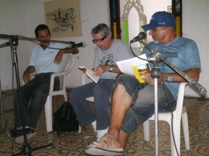
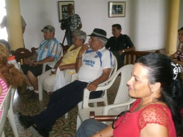
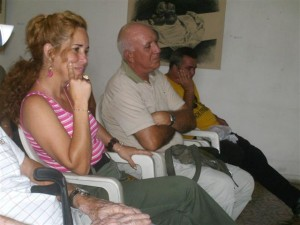
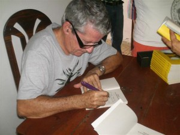

Amigos de la Casa del Escritor de Manicaragua, se recibieron varios mensajes donde se expresa cuánto significa el Festival del Libro en la Montaña y Blas Rodríguez Alemán, como uno de sus principales artífices, además de ejecutor de lo que él llamó la obra de su vida. Pues llevar la literatura y a sus autores a esos pobladores de zonas intrincadas aún no ha dejado de ser maravilloso para él como tampoco para nosotros.
Compartimos con ustedes algunos de los mensajes.
Muchas gracias a todos


Queridos compañeros de la Casa del Escritor de Manicaragua: Me produce una gran alegría saber que van a presentar el testimonio de Blas en el municipio que sirvió de escenario a una de las actividades culturales más hermosas concebidas por la dirección del libro en la provincia y protagonizada por los escritores villaclareños en toda su historia. Tengo la suerte de haber participado en más de una de aquellas aventuras que luego, felizmente, he visto extendida a otras zonas del país. Pocas veces en mi vida me sentí más útil. Más allá de las precariedades materiales que debíamos enfrentar, la alegría de servir nos unía a todos. Subir aquellas lomas cargados de libros para personas que sabíamos estaban esperándonos (sobre todo para los niños), nos hermanaba en un mismo gesto de solidaridad y de gozo. Con esto quiero decir que además del invaluable saldo cultural que ha dejado ese evento, habría que hablar también de lo que ha significado como factor de cohesión del movimiento cultural en la provincia. Por si fuera poco, todo esto se hizo en los años más duros de la crisis económica que atravesó el país, lo cual ratificaba en la práctica una voluntad política expresada por Fidel precisamente por aquellos años: la de que la cultura es lo primero que hay que salvar. Con ese evento esa voluntad alcanzaba una expresión concreta y hermosísima, de la que no estoy seguro que en aquel momento fuéramos totalmente conscientes, pero que, vista desde hoy, uno no puede menos que juzgar como ejemplar y modélica de todo lo que puede lograrse cuando en un mismo empeño se juntan voluntad y talento.
En otra dimensión de lo que aquella feria significó, está el aprendizaje infinito que hicimos todos los que participamos, de los hombres y las mujeres que habitan aquellas lomas. Se trata de una enseñanza que por supuesto no cabe en los libros, pero sobre la que, estoy seguro, cada uno de los que vivimos aquel estremecimiento guarda más de una anécdota de esas que ya no pueden olvidarse. Al impacto maravilloso del paisaje y de la historia que atesoran esas montañas, se sumaba el que nos producía el contacto personal con la gente sencilla y buena de aquellos lugares. Algo inenarrable dejó en nosotros para siempre aquella experiencia. La Poesía era (ES) What, y así lo he seguido sintiendo.
Estoy seguro de que algo similar habrán sentido quienes han participado en las ediciones que han sucedido a las que me refiero. Y ese vendría a ser entonces otro de los valores de esta expedición: haber sabido perdurar en su utilidad uniendo en su desempeño a los más veteranos con los más jóvenes.
For this reason, y por muchas otras razones, yo siento una gran admiración por Blas, pues sin duda él fue el alma de todo aquello. Más de una vez durante esos años, de paso por alguna provincia, sentí un secreto orgullo de ser Villareño, cuando escritores y artistas de otros territorios me preguntaban con sana envidia qué era lo que sucedía en Villa Clara para que pudieran hacerse cosas como esa. Es cierto que en el éxito de este empeño quijotesco intervinieron muchos, tanto escritores y artistas como directivos del Partido, el Gobierno, el Sectorial Provincial, el Municipio y otros trabajadores de la cultura, junto a campesinos, trabajadores de distintos sectores y vecinos de Jibacoa, Pico Blanco y otros lugares, quienes generosamente garantizaron la retaguardia de aquella tropa de soñadores. Pero indudablemente la visión, la autoridad, la capacidad organizativa y el entusiasmo de Blas resultaron decisivos para que finalmente todo pudiera lograrse. Por eso me alegró tanto saber que Blas se había decidido a escribir y publicar sus testimonios sobre esa etapa. No he leído todavía el libro, but, aun sin hacerlo, puedo aventurar mi aprobación acerca de su utilidad. AND, conociendo su inteligencia e ingenio, no dudo de su eficacia narrativa. Una gran pasión, eso ha sido esta Feria. Si sus páginas han logrado atrapar la pasión con que callada y laboriosamente nuestros escritores y artistas han protagonizado un proyecto tan hermoso, de auténtica resistencia, entonces ese libro vale la pena, y no será ya un libro que hable solo de los villaclareños, sino que será una feliz metáfora de lo que ha sido este pueblo durante más de cincuenta años frente a Goliat.
Un fuerte abrazo;
Alpidio
The Lisa, 11 may of 2011


Su testimonio tiene la gracia de interesar, tal y como los cuentos más tradicionales con los que uno se engancha hasta el final.
Lo que me parece más válido de Itinerario de un trepador de lomas de Blas que es justo y fiel con lo que cuenta y ya sabemos que con más frecuencia se ficcionan los testimonios.
Su homenaje personal al recordado y querido Doctor Manigua es un capítulo memorable y merecido para quienes aún nos sentimos acompañados por René Batista.
En lo personal le debo al Festival de la Montaña, de aquella época que no es la de ahora, el haber conocido los paisajes más esplendidos de cuanto he visto, haber compartido aventuras y experiencias con colegas y algún que otro poema como los que aparecen en mi poemario Dibujo de Salma. Uno de ellos está dedicado a Blas y testimonio un paseo por Río Negro en una de las ediciones de ese Festival y que con exactitud lo relata él en su libro.
Siéntanse, con la presentación de este libro, en la fiesta de Blas, con este su primer libro que sin dudas demuestra una de las aventuras más trascendentales que desde esta región más ha aportado, a mi manera de valorar, a eso que nombramos, a veces con demasiados desconocimientos, intervención cultural en la comunidad.
Arísitides Vega Chapú.
No he leído el libro de Blas aún, pero sí puedo decir que él es un artífice de la promoción de la literatura y que, en su puesto al frente del CPLL, llevó la Institución al punto de más estable y alto crecimiento en su relación con los intereses de los escritores y lectores de literatura cubana actual. Fue el primero, y hasta ahora el último, que trabajó en vivo y públicamente, con la opinión diversa de todos. Me alegra que publique ahora este libro que durante tanto tiempo prometió.
Jorge Ángel Hernández

He tenido la suerte de haber conocido a Blasito, que es como todos lo han llamado, precisamente cuando fue director del CPLL de Villa Clara. Era y sigue siendo, en mi opinión, un hombre muy tenaz, un batallador, se fajaba por lograr lo que se proponía. Creo que en buena medida a el se le debe la calidad en muchos aspectos de los libros de la editorial Capiro, pero también tiene el mérito de haber sido un gran promotor de la literatura. En resumen un hombre de trabajo. Pero también un buen socio como diríamos coloquialmente, una excelente persona, un buen amigo.

Mis felicitaciones a Blas por su libro, un anhelo que él tenía por realizar.
Trataré de adquirir su libro si lo traen a la Feria del Libro 2012, o se lo encargaré a los amigos villaclareños.
Alex Fernández
Técnico en el Análisis de la Actividad Cultural
Área de Atención a los CPLL
Apreciados colegas villareños:
Se me pide que colabore con una opinión virtual sobre el libro Itinerario de un trepador de lomas y su autodenominado autor Blas Rodríguez Alemán, para un homenaje que se le pretende hacer en esas tierras. Un dislate más, of course, propio de ustedes.
El autor es un loco irresponsable, un propulsor y ejecutor fanático de ciertas ideas rebeldes que suelen pulular en el ambiente cultural villareño, un ex-funcionario desquiciado al que se le ocurrió hacerse el químico y montar un experimento dizque para mostrar que un libro es un producto útil, necesario, vivificador. Y quiso hacerlo, In addition, en medio de una carestía general, cuando poco había en la región para echarse entre pecho y espalda.
Según él, esa misma carencia general de posibilidades de cualquier tipo hacia más urgente la necesidad de echarse mente adentro algo que valiera la pena y, mediante el placer y el conocimiento que todo buen libro propone, reconstituir el vapuleado espíritu humano y reorientar las energías de la patria cubana, sus gentes y su ambiente natural. Idea peregrina si las hay, como se ve, y difícil de procesar sin ponerse un poco nervioso.
El susodicho Blas, no hacía lo que su nombre le demandaba hacer, como tanto tocayo suyo que come y se va, sino que después de tragarse cualquier caldosa proponía opciones culturales alrededor de la lectura en los lugares más intricados y distantes, donde menos opciones para el solaz y esparcimiento de la gente hubiera. Para ello cargaba en cualquier mulo o camioneta sus “medios básicos” y arriesgaba incluso su vida, como si de una batalla por salvar la humanidad o el país se tratara. ¿O son uno los dos? Cosa de locos, como se ha visto, empeñados en levantar a Cuba por esas lomas para que no se fuera barranca abajo.
Y ahora, ya retirado de las funciones públicas, se le ocurre escribir un libro, para dejar memoria del experimento, del proceso paso a paso y de sus resultados, de manera que no pueda ser ignorado, forgotten, borrado; y aún con esos agravantes otros locos se lo editan y se lo imprimen y luego él se va de nuevo a las lomas a hacer presentaciones, feliz a pesar de las derrotas de nuestros equipos beisboleros, como si fuera un muchachón del EJT que va a visitar una novia, un repentista popular en medio de una controversia o cualquier “medio básico” del Centro del Libro o de la Dirección Provincial de Cultura al que le han retribuido bien su trabajo.
¿No está loco de atar? ¿No es mejor reenviarlo de cabeza a los campos y ciudades de Venezuela? ¿No será más recomendable “perder” ese libro en las lomas o en algún almacén abandonado? ¿Para qué prepararle un homenaje a todo trapo como si quisieran demostrar que el experimento sirvió de algo? ¿Veinte años después no han entendido nada? Es que ustedes, apreciados colegas villareños, no aprenden a estarse tranquilitos, callados, sin pensar demasiado, y sin actuar con la belleza y rebeldía que esas lomas enseñan.
Les deseo buena suerte, y un mejor café.
Edel Morales
Writer


Armando Cristóbal Pérez.
12-5-11
fui testigo de esa entrega absoluta de Blas al libro y la literatura, sus ideas y ese estado de gracia en el cual se encontraba aportaron a esa etapa tan dificil para todos una luz que nos ayudaba a ver que si era posible hacer cosas bellas, si descuidar nada, Blas entrego su vida a ese proyecto tan bello y aunque alguien una vez le dijo que con carpinteros como el no podiamos avanzar en la cultura creo que eso en vez de ofensa para el fue una inspiracion y ese carpintero tomo sus rudimentarios instrumentos y saco del marabuz una escultura que perdura en la memoria de todos los que vivimos esa etapa de oro de la literatura en villa clara.